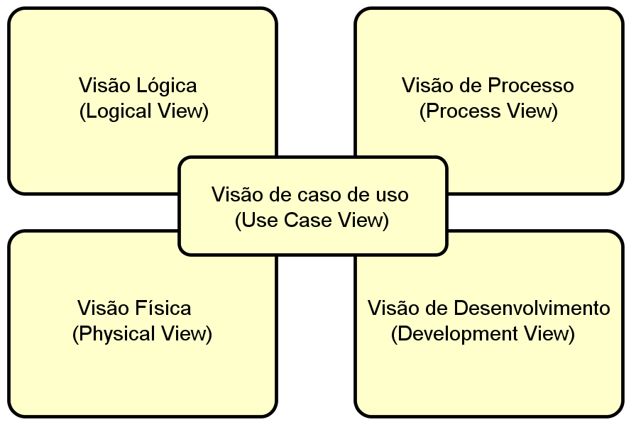

ArquiteturaPágina 1 de 13
Centralizador Financeiro Inteligente Documento de Arquitetura de Software Versão 1.3 Histórico da Revisão • 02/06/2026 — versão 1.0 — Versão inicial — Equipe do projeto. • 04/06/2026 — versão 1.1 — Revisão e estruturação — Samuel Mota. • 06/06/2026 — versão 1.2 — Revisão geral e alinhamento de RNF — Thiago Marques e Miguel Candido. • 04/09/2026 — versão 1.3 — Arquitetura modular do MVP e evolução SaaS aprovada — Equipe do projeto. Introdução Este documento apresenta a arquitetura do Centralizador Financeiro Inteligente, aplicação analítica web e mobile de finanças pessoais para usuários individuais. Cada tenant representa exatamente uma pessoa e o MVP acadêmico utiliza somente dados fictícios. Finalidade Registrar decisões técnicas, fronteiras, processos, dados, implantação, segurança, testes e evolução. Decisões condicionais não são apresentadas como migrações aprovadas nem como capacidades já implementadas. Decisões arquiteturais Arquitetura Modular Clean/Hexagonal, inicialmente implantada como um único serviço serverless NestJS, com extração evolutiva de módulos e adoção seletiva de eventos somente quando justificadas por necessidades demonstradas. A topologia inicial de um único serviço implantável não reduz a arquitetura interna a um monólito sem qualificação. O backend possui módulos de negócio e dependências orientadas ao núcleo de aplicação e domínio.
ArquiteturaPágina 2 de 13
Escopo Visão do escopo arquitetural do MVP Aplicações web e mobile independentes; API REST; identidade Auth0; backend NestJS; PostgreSQL no Neon; Prisma; RLS; OFX; Pluggy Sandbox; QStash; Cloudflare R2; dashboard, investimentos, patrimônio líquido, projeções e auditoria; Vercel, Expo/EAS e Google Cloud Run; ambientes local e demonstração acadêmica. Visão do que está fora da arquitetura ativa Supabase, monorepo, Solito, Tamagui, pacote compartilhado de schemas, Redis, cache distribuído, CQRS, Event Sourcing, GraphQL, gRPC, event bus como mecanismo primário, microserviços obrigatórios, tributação, billing, notificações, administração, contas compartilhadas e serviços AWS futuros. Definições, Acrônimos e Abreviações Termo Definição Tenant Espaço financeiro pertencente a exatamente um usuário individual. Módulo Fronteira lógica de negócio dentro do backend NestJS. Domínio Entidades, value objects, regras e invariantes livres de infraestrutura. Aplicação Casos de uso, orquestração e interfaces públicas dos módulos. Port Contrato em uma fronteira externa ou entre módulos. Adapter Implementação de entrada ou saída ligada a uma tecnologia. RLS Row-Level Security do PostgreSQL usada como defesa em profundidade. OpenAPI Contrato da API mantido pelo repositório backend. OFX Formato estruturado usado para importação de extratos. RPO/RTO Objetivos de recuperação obrigatórios somente na operação SaaS.
ArquiteturaPágina 3 de 13
Restrições e requisitos arquiteturais Atributo Requisito Resposta arquitetural Adequação funcional Entregar o escopo do MVP sem módulos futuros. Oito módulos de negócio no mesmo serviço NestJS. Segurança Isolar tenants e minimizar dados sensíveis. Auth0, autorização NestJS, RLS, TLS, validação e menor privilégio. Desempenho Avaliar dashboard com dataset definido. Índices, paginação, consultas otimizadas e pré-cálculo somente quando exigido. Confiabilidade Evitar duplicidade e preservar dados existentes. Idempotência, controle de concorrência, retries e PostgreSQL como fonte de verdade. Interoperabilidade Manter clientes e provedores desacoplados. REST /api/v1, OpenAPI e ports para integrações. Manutenibilidade Manter regras testáveis e dependências internas. Clean/Hexagonal pragmática sem camadas ou interfaces vazias. Portabilidade Implantar aplicações de forma independente. Três repositórios e três pipelines. Observabilidade Diagnosticar sem expor dados financeiros. Logs JSON, Cloud Logging, métricas Cloud Run e auditoria PostgreSQL. Usabilidade Atender web e mobile sem fonte compartilhada. Identidade visual documentada; implementações independentes. Os objetivos de até 10.000 transações por usuário e P90 inferior a dois segundos são hipóteses de desempenho. O teste deve registrar dataset, cenário, rede, fronteira de medição e resultado. Disponibilidade mensal de 99,5% é objetivo SaaS. A arquitetura isoladamente não garante nenhum desses valores.

ArquiteturaPágina 4 de 13
Visão Lógica
Representação dos módulos de negócio
Módulo Responsabilidade
Identity Associação Auth0, usuário e tenant individual.
Accounts Contas financeiras manuais e conectadas.
Transactions Receitas, despesas, transferências contábeis, categorias e regras.
Ingestion Importação OFX e sincronização Pluggy diária ou manual.
Investments Posições e informações de investimento.
Patrimony Bens, financiamentos e passivos cadastrados manualmente.
Analytics Dashboard, consolidação, patrimônio líquido e projeções.
Audit Trilhas de auditoria de ações de negócio relevantes.
Todos são módulos lógicos do mesmo serviço NestJS implantável. Não existem módulos MVP para impostos, cobrança, notificações, administração, compartilhamento ou serviços AWS futuros.
Cada módulo possui suas tabelas e implementações de repositório. Um módulo não acessa diretamente repositórios ou tabelas internas de outro. Comunicação entre módulos ocorre por interfaces públicas da camada de aplicação ou por evento assíncrono quando houver justificativa concreta.
Visão de componentes
Web Next.js ──┐
├── HTTPS REST /api/v1 ── Backend NestJS ── PostgreSQL/Neon
Mobile Expo ──┘ │
├── Auth0
QStash ── handlers autenticados ─────────────┤
├── Pluggy Sandbox
└── Cloudflare R2ArquiteturaPágina 5 de 13
Visão Clean/Hexagonal pragmática Representação das camadas e dependências Camada Conteúdo Domain Entidades, value objects, regras e invariantes de negócio. Application Casos de uso, orquestração, ports necessários e interfaces públicas dos módulos. Inbound adapters Controllers REST, entradas de jobs agendados e handlers QStash. Outbound adapters Prisma, Auth0, Pluggy, Cloudflare R2 e QStash. As dependências apontam para a aplicação e o domínio. O domínio não importa NestJS, Prisma, PostgreSQL, Auth0, Pluggy, QStash, R2, Zod, OpenAPI ou detalhes de transporte. Ports são criados apenas em fronteiras externas reais ou na comunicação pública entre módulos. A implementação não cria camadas vazias, abstrações especulativas, módulos placeholder nem uma interface para cada classe. Visão da API e validação A API REST é versionada em /api/v1. Operações que exigem resposta imediata permanecem síncronas. OpenAPI é o contrato pertencente ao backend e gera clientes tipados separados para web e mobile. Nenhuma biblioteca geradora específica está aprovada. Zod executa validação em bordas de apresentação e adapters. Schemas Zod não são entidades de domínio e não são compartilhados como pacote-fonte entre repositórios. Web e mobile podem seguir a mesma identidade visual documentada e o mesmo contrato OpenAPI, mas não compartilham componentes, navegação ou código-fonte.
ArquiteturaPágina 6 de 13
Decisões arquiteturais Item arquitetural Decisão do MVP Topologia Um serviço NestJS serverless em container no Google Cloud Run. Linguagem TypeScript nos três repositórios. Web Next.js implantado na Vercel. Mobile React Native com Expo, distribuído por Expo/EAS. API REST sob /api/v1, contrato OpenAPI no backend. Validação Zod nas bordas. Identidade Auth0 por OAuth 2.0, OpenID Connect e validação JWT. Persistência Prisma como adapter; PostgreSQL hospedado no Neon. Tenancy Schema PostgreSQL compartilhado, tenant_id e RLS. Open Finance Pluggy Sandbox. Trabalho assíncrono Upstash QStash para agendas, trabalhos longos e retries. Objetos Cloudflare R2; PostgreSQL guarda metadados e referências. Observabilidade Logs JSON, Google Cloud Logging e métricas nativas do Cloud Run. Auditoria Registros de negócio mínimos no PostgreSQL. CI/CD GitHub Actions independente em cada repositório. Ambientes Desenvolvimento local e demonstração acadêmica. IaC do MVP Container, configuração de deploy, exemplos de variáveis e instruções reproduzíveis. Testes backend Vitest, Supertest e testes específicos de integração, isolamento e contrato. PostgreSQL é a fonte de verdade. O MVP começa com índices adequados, paginação e otimização de consultas. Pré-cálculos só são introduzidos por requisito aprovado. Redis ou outro cache distribuído exige evidência medida.
ArquiteturaPágina 7 de 13
Visão de Dados O MVP utiliza um schema PostgreSQL compartilhado. Todo registro pertencente ao usuário contém tenant_id diretamente ou possui relação de propriedade obrigatória e verificável. Módulo Estruturas de propriedade Identity users, tenants, identity_links Accounts accounts, connections Transactions transactions, categories, category_rules Ingestion import_runs, sync_runs, ingestion_items Investments investment_positions, investment_movements, investment_details Patrimony patrimonial_assets, financing, liabilities, valuations Analytics consolidation_snapshots, projection_runs Audit audit_records As migrations Prisma podem incluir SQL customizado revisado para criar e manter políticas RLS. Prisma é adapter de infraestrutura; casos de uso dependem de ports de repositório. Conceitos de investimentos preservam source, external_identifier, asset_type, reference_date, currency e data_quality. Campos fornecidos pelo Pluggy podem incluir quantidade ou saldo, valor investido, resultado, instituição, movimentos, taxa, índice e vencimento. Ausência, indisponibilidade e defasagem são estados explícitos. Arquivos ficam no R2 conforme as regras de ciclo de vida aprovadas. PostgreSQL armazena somente metadados, hash, referência do objeto, estado e resumo. Credenciais do R2 nunca são expostas aos clientes. Logs não armazenam tokens, segredos, descrições completas de transações, payloads financeiros nem dados pessoais desnecessários.
ArquiteturaPágina 8 de 13
Visão de Processos Representação das operações síncronas Autenticação validada ── controller REST ── caso de uso ── domínio ── repositório port ── Prisma/PostgreSQL ── resposta Cadastro, consulta, edição, dashboard dentro da fronteira de latência e confirmação de operações usam REST síncrono. Representação da importação OFX • O usuário envia OFX por canal autenticado. • A borda valida tipo, tamanho, estrutura e conteúdo. • O sistema cria ImportRun e apresenta prévia. • Após confirmação, uma importação longa pode ser encaminhada ao QStash somente com identificadores. • O handler autenticado deduplica, persiste pelo módulo proprietário e registra resultado. • O usuário consulta itens importados, ignorados e com erro. • O objeto segue o ciclo de vida aprovado no R2. Representação da sincronização Pluggy Sandbox • QStash agenda uma execução diária ou recebe solicitação manual. • O backend cria ou reutiliza chave idempotente por conexão e janela. • Lock ou controle equivalente impede execução concorrente. • O adapter Pluggy obtém somente dados autorizados. • Módulos proprietários persistem contas, transações e investimentos sem duplicidade. • O estado registra sucesso, falha, parcialidade e data de referência. • Falhas transitórias recebem retries controlados. Jobs nunca contêm tokens Pluggy, segredos ou payload financeiro desnecessário.
ArquiteturaPágina 9 de 13
Visão de eventos e evolução assíncrona O MVP não é integralmente orientado a eventos e não utiliza event bus como comunicação primária. Transações síncronas permanecem síncronas quando consistência e resposta imediata são apropriadas. QStash é usado no MVP para: • Sincronização diária do Pluggy Sandbox. • Solicitações manuais de sincronização. • Importações longas. • Cálculos longos quando necessários. • Retentativas controladas. Eventos internos ou assíncronos adicionais exigem uma necessidade demonstrada, como escalabilidade independente, isolamento de falhas, múltiplos consumidores, autonomia de implantação ou gargalo medido. Mapeamento condicional para AWS Necessidade Serviço possível Agenda EventBridge Scheduler. Fila durável Amazon SQS. Fan-out para vários consumidores EventBridge Event Bus. EventBridge Event Bus não é substituto automático ou exclusivo do QStash. Extração de serviços, streaming, CQRS, Event Sourcing ou troca de broker não constituem fases obrigatórias.
ArquiteturaPágina 10 de 13
Visão da Implementação Existem exatamente três repositórios principais. Repositório Conteúdo e responsabilidade web Next.js, TypeScript, experiência web e cliente tipado gerado do OpenAPI. mobile React Native, Expo, experiência mobile e cliente tipado gerado do OpenAPI. backend NestJS, domínio, aplicação, adapters, OpenAPI, migrations, SQL RLS, container, deploy e segurança. O backend organiza cada módulo internamente em domain, application e adapters apenas onde houver responsabilidade concreta. Implementações de banco e provedores permanecem externas ao domínio. Cada repositório possui pipeline GitHub Actions independente. Pull requests executam lint, testes e build relevantes. A implantação na demonstração acadêmica ocorre somente depois de aprovação e merge na branch principal. O MVP versiona a definição do container, configuração de implantação, exemplos de variáveis de ambiente e instruções reproduzíveis. Terraform ou OpenTofu não são obrigatórios. Infraestrutura como código torna-se obrigatória ao estruturar staging e produção do SaaS. A operação acadêmica usa consoles dos provedores, logs, métricas, migrations, seeds, scripts versionados e runbooks controlados. Não existe API, conta ou painel administrativo do produto.
ArquiteturaPágina 11 de 13
Visão de Implantação
Componente Implantação ou função
Cliente Web Navegador acessando Next.js por HTTPS.
Vercel Hospedagem e implantação da aplicação web.
Cliente Mobile Aplicação React Native distribuída pelo Expo/EAS.
Google Cloud Run Um serviço NestJS em container com escalabilidade serverless.
Neon PostgreSQL gerenciado e fonte de verdade.
Auth0 Identidade e e-mails essenciais do ciclo da conta.
QStash Agendas, jobs longos e retries para handlers autenticados.
Cloudflare R2 Objetos; metadados e referências permanecem no PostgreSQL.
Pluggy Sandbox Contas, transações e investimentos fictícios autorizados.
Google Cloud Logging Destino dos logs estruturados do backend.
GitHub Actions Verificação e implantação independente por repositório.
Ambientes do MVP
• Desenvolvimento local.
• Demonstração acadêmica.
Staging e produção separados são obrigatórios somente na evolução SaaS.
Web ── Vercel ────────┐
Mobile ── Expo/EAS ───┼── HTTPS ── Cloud Run/NestJS ── Neon PostgreSQL
QStash ───────────────┘ ├── Auth0
├── Pluggy Sandbox
└── Cloudflare R2ArquiteturaPágina 12 de 13
Visão de segurança, privacidade e observabilidade Visão do baseline do MVP HTTPS/TLS; autenticação Auth0; autorização NestJS; isolamento por tenant; PostgreSQL RLS; validação estrita; segredos fora do controle de versão; nenhum dado sensível em logs; menor privilégio; e auditoria das ações relevantes. Auth0 cuida de identidade. NestJS e PostgreSQL cuidam de autorização, propriedade, isolamento e auditoria. Regras de autorização do produto não são incorporadas à configuração específica do Auth0. Logs técnicos são JSON enviados ao stdout e ao Google Cloud Logging. Métricas nativas do Cloud Run acompanham o serviço. Auditoria de negócio é persistida separadamente no PostgreSQL com ator, tenant, ação, recurso, timestamp, resultado e request/correlation id. OpenTelemetry, tracing distribuído, Grafana, Datadog, ELK e SIEM são adiados até que topologia ou escala justifique. WAF, MFA obrigatória, SAST/DAST, SIEM, pentest formal e retenção formal são controles necessários antes ou durante produção SaaS conforme risco, não funcionalidades do MVP. Como o MVP utiliza dados fictícios, não há compromisso operacional formal de RPO/RTO nem rotina própria de backup. No SaaS serão obrigatórios RPO 24h, RTO 8h, backups automatizados, testes de restauração, runbooks, LGPD completa e controles adequados a dados reais.
ArquiteturaPágina 13 de 13
Visão de testes, desempenho, evolução e referências Representação da estratégia de testes Teste Abordagem Unidade Vitest para domínio e casos de uso. Integração Vitest com Prisma e PostgreSQL. REST crítico Supertest. Tenant e RLS Casos explícitos de acesso permitido e cruzado. Contrato OpenAPI e clientes gerados de web e mobile. Adapters Mocks, fakes ou Pluggy Sandbox. Ponta a ponta Somente fluxos críticos. Desempenho Dataset acadêmico com 10.000 transações; medir sem garantir antecipadamente. Visão da evolução de investimentos Primeiro SaaS: Pluggy real; APIs oficiais do Banco Central para Selic, PTAX, moedas e indicadores; dados abertos da CVM para fundos, considerando ETL, CNPJ e atraso; e históricos oficiais do Tesouro Direto. Posteriormente, dados licenciados da B3 podem cobrir ações, FIIs, ETFs e BDRs. Criptomoedas dependem de demanda. S3 é a direção de armazenamento se o SaaS for estruturado na AWS. Cognito é apenas alternativa a avaliar se consolidação AWS demonstrar benefício. Nenhuma migração está aprovada antecipadamente. Lista de referências Documento de Visão do Centralizador Financeiro Inteligente, versão 1.3. Documento de Requisitos de Software do Centralizador Financeiro Inteligente, versão 1.4. ISO/IEC 25010 — modelo de qualidade de produto e software. Kruchten — modelo arquitetural 4+1. Documentações oficiais de NestJS, OpenAPI, Prisma, PostgreSQL RLS, Neon, Auth0, Pluggy, QStash, Cloudflare R2, Google Cloud Run, Vercel, Expo/EAS e GitHub Actions. Fontes oficiais do Banco Central do Brasil, CVM, Tesouro Direto, B3 e AWS para as evoluções condicionais.